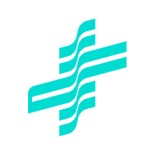
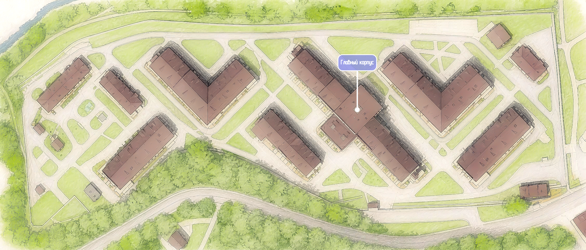

×

ГБУЗ "Инфекционная больница №2"
Необходимо выбрать начальную точку
Отсканировать QR-код здания
Выбрать отделение вручную
Отмена
ГБУЗ "Инфекционная больница №2"
Навигационная карта
Добавить

Выберите своё месторасположение
Нет соединения. Загрузите приложение при наличии интернета.
Откройте вкладку для ознакомления
×